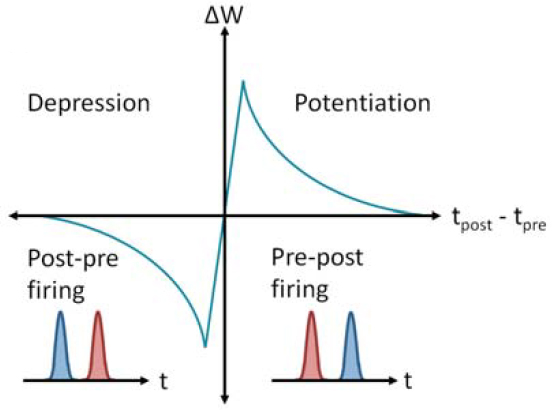

Spike-Timing-Dependent Plasticity (STDP)
Spike-Timing-Dependent Plasticity (STDP) is a biologically plausible learning rule that adjusts the strength of synaptic connections based on the relative timing of action potentials (spikes) from pre-synaptic and post-synaptic neurons. It introduces strict temporal asymmetry to the classic Hebbian postulate ("cells that fire together, wire together").
The Mathematical Formulation
Let \(\Delta t\) be the difference in spike times between the post-synaptic and pre-synaptic neurons:
\[\Delta t = t_{\text{post}} - t_{\text{pre}}\]
The change in synaptic weight, \(\Delta w\), is defined by a piecewise exponential decay function:
\[\Delta w(\Delta t) = \begin{cases} A_+ e^{-\frac{\Delta t}{\tau_+}} & \text{if} \quad \Delta t > 0 \\ -A_- e^{\frac{\Delta t}{\tau_-}} & \text{if} \quad \Delta t < 0 \\ 0 & \text{if} \quad \Delta t = 0 \end{cases}\]
Variable Definitions
- \(A_+\) and \(A_-\): The maximum amplitude of synaptic change. These represent the learning rates for potentiation (strengthening) and depression (weakening).
- \(\tau_+\) and \(\tau_-\): The time constants that define the width of the learning window. They dictate how quickly the effect of a spike decays over time, typically acting on the order of 10 to 20 milliseconds.
- \(t_{\text{pre}}\) and \(t_{\text{post}}\): The exact timestamps of the pre-synaptic and post-synaptic spikes.

The Biological Mechanisms
- Long-Term Potentiation (LTP) [\(\Delta t > 0\)]: If the pre-synaptic neuron fires *just before* the post-synaptic neuron, it strongly implies a causal relationship (the pre-synaptic spike contributed to the post-synaptic spike). The synapse is strengthened (\(\Delta w > 0\)). The tighter the temporal correlation, the stronger the potentiation.
- Long-Term Depression (LTD) [\(\Delta t < 0\)]: If the post-synaptic neuron fires *before* the pre-synaptic neuron, the pre-synaptic spike could not have caused the post-synaptic spike. This anti-causal relationship weakens the synapse (\(\Delta w < 0\)).